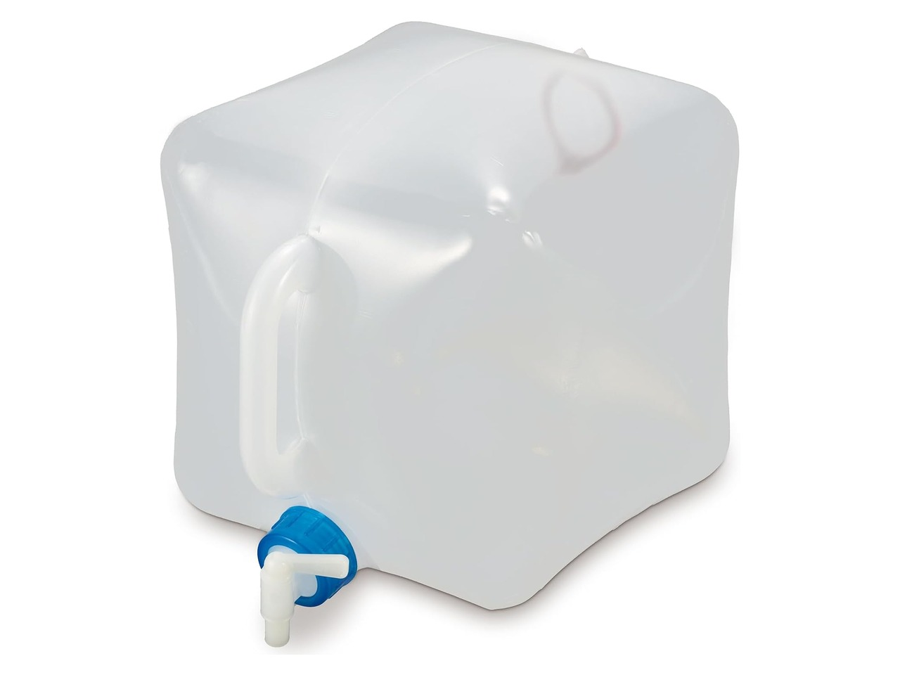
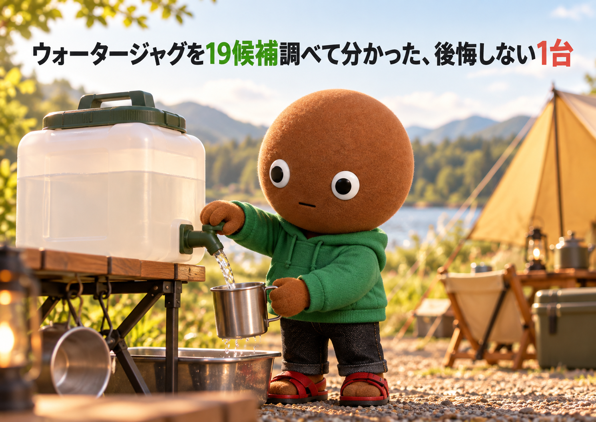
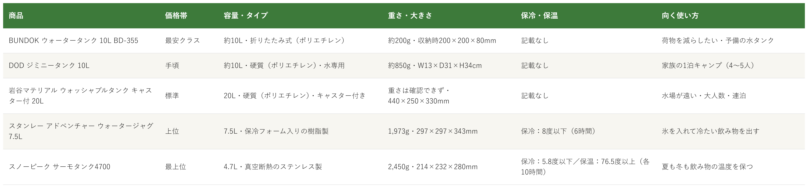

Amazonで見るウォータージャグを選べず、容量や素材で買って後悔したくない人へ
そのウォータージャグ、
容量と素材で選んでいますか？
容量・素材・保冷や保温・持ち運びやすさまで、ウォータージャグ19候補を調査。使い方が重複しない5商品を比較しました。
自分に合うウォータージャグを探す
この記事はAmazonアソシエイト・プログラムの参加者として、紹介料を得る場合があります（PR）。仕様は調査時点の情報です。
19候補から、使い方の違う5商品に絞りました。まずは気になる1つへ。向いている人・向いていない人と、低評価レビューもまとめています。
19候補を調査
5商品に厳選
低評価レビューも確認済み
結論から先に言うと：
容量・素材・保冷や保温、何を優先するかで1つを。
横にスワイプして、5商品を見比べる
選び方の基準は3つ
調べてわかったのは、基準は3つでした。
1つ目は「容量とタイプ」。CAMP HACKは、家族4人の1泊2日で8〜10L、水場が近いキャンプ場なら2〜4Lでも足りるとしています。タイプは、硬質は安定して使いやすい一方で収納でかさばり、折りたたみ式は小さくしまえる一方で保冷力はない、と整理されています。今回の5商品は、折りたたみ式の約10L、硬質の約10L、硬質の20L、保冷フォーム入りの7.5L、真空断熱の4.7Lです。
2つ目は「水専用か、飲み物も入れるか」。DODのジミニータンクは水専用で、熱湯・ジュース・灯油は入れないよう公式に書かれています。一方、スタンレーは商品ページに飲み物を注ぐと書かれ、スノーピークは公式がビールやウォーターサーバーとしての利用を挙げています。保冷や保温の数値は、スタンレーが8度以下（6時間）、スノーピークが保冷5.8度以下・保温76.5度以上（各10時間）で、いずれもメーカーの試験条件での値です。
3つ目は「重さと運びやすさ」。空の重さは、約200gから2,450gまで約12倍の差があります。ただし水は1Lで約1kgなので、10Lなら水だけで約10kg、20Lなら約20kgです。満水の状態で運べるか（持ち手・キャスターの有無）も、選ぶ基準になります。
比較表

価格帯・容量とタイプ・重さと大きさ・保冷と保温・向く使い方の比較（価格帯は、調査時点のAmazon出品価格の順に付けた目安です。価格は変動が大きく、容量も商品ごとに違います（約10L・約10L・20L・7.5L・4.7L））
BUNDOK ウォータータンク 10L
- 最安クラス
- 約10L・折りたたみ式（ポリエチレン）・コック付き
- 約200g、収納時200×200×80mm
DOD ジミニータンク 10L
- 手頃
- 約10L・硬質（ポリエチレン）・水専用・飲料水OK
- 約850g、W13×D31×H34cm
岩谷マテリアル ウォッシャブルタンク キャスター付 20L
- 標準
- 20L・硬質（ポリエチレン）・キャスター付き・レバー式コック
- 重さは確認できず、440×250×330mm
スタンレー ウォータージャグ 7.5L
- 上位
- 7.5L・保冷フォーム入り・保冷8度以下（6時間）
- 1,973g、297×297×343mm
スノーピーク サーモタンク4700
- 最上位
- 4.7L・真空断熱ステンレス・保冷5.8度以下／保温76.5度以上（各10時間）
- 2,450g、214×232×280mm
向いてる人
- 使わない時は、小さくしまいたい人
- 予備の水タンクを、車に積んでおきたい人
- まず手頃に、水タンクを試したい人
向いてない人
- 氷を入れて飲み物を冷やしたい人（保冷の記載はありません）
- 水が少なくなっても安定して置きたい人（Amazonのレビューに、水が減ると蛇口をひねるたびに本体が動くという声）
- 口が広くて、中をしっかり洗いたい人（レビューに、口が狭くて掃除しにくいという声）
選ぶ決め手約200gで10L、収納時は200×200×80mm。持ち物を減らしたい人が、最初に試しやすい1台です。
低評価レビューを調べました
Amazonのレビューには、★3で、口が狭くて掃除しにくかったという投稿がありました（口の広い大きいサイズを買えばよかった、とも書かれています）。同じ投稿には、水が少なくなると蛇口をひねるたびに本体が動くとあります。★4には、全開にしても水の勢いが弱いという声もあります。
参考：Amazon商品ページのレビュー（★3、★4）
BUNDOKのウォータータンク10Lは、
荷物を増やさずに水を運びたい人に
最適な1台です。
容量は約10Lで、
折りたたみ式のコック付きです。
重さは約200g、
収納時は200×200×80mmです。
向いてる人
- 4〜5人家族の1泊キャンプで、水を使う人
- 幅13cmのスリムなタンクを、すき間に積みたい人
- 手洗いや食器洗いで、水を出し続けたい人
向いてない人
- 熱湯やジュースも入れたい人（水専用で、熱湯・ジュース・灯油は入れないよう公式に記載）
- 軽さを優先する人（折りたたみ式の約200gに対して、約850g）
- 氷で飲み物を冷やしたい人（保冷の記載はありません）
選ぶ決め手水専用で飲料水OKの表記、レバー固定、幅13cmのスリムな形がそろった1台。家族キャンプの水の基本として、迷いにくい選択です。
低評価レビューを調べました
Amazonのレビューには、★3で、堅牢な造りのぶん重めだという投稿がありました（取っ手が長辺側だけでなく、短辺側にもほしい、とも書かれています）。★4には、上の取っ手が持ちにくいほど小さいという声もあります。また、水の出が悪くなったときは、公式の案内どおり上部のフタを緩めれば問題ない、という投稿が複数ありました。
参考：Amazon商品ページのレビュー（★3、★4）
DODのジミニータンク10Lは、
水専用の頑丈なタンクを使いたい人に
最適な1台です。
容量は約10Lで、
食品衛生法に適合しています。
重さは約850g、
幅13cmのスリムな形です。
向いてる人
- 水場が遠く、20Lの水を運ぶのが大変な人
- 大人数や連泊で、水をまとめて持ち込みたい人
- 断水時の給水にも使えるタンクがほしい人
向いてない人
- 軽さやコンパクトさを優先する人（硬質の20Lで、収納でかさばる）
- 空気圧でポンプを動かす用途に使いたい人（レビューに、大きい方の栓から空気が漏れるという声）
- 氷で飲み物を冷やしたい人（保冷の記載はありません）
選ぶ決め手満水の20Lを担がず、転がして運べる。5商品の中でキャスターが付くのはこの1台だけです。
低評価レビューを調べました
Amazonのレビューには、★3で、大きい方の栓をきつく締めても空気が漏れ、空気圧で動かす水撒き用のポンプには使えなかったという投稿がありました（災害用には優秀、とも書かれています）。今回確認できた範囲では、ほかの★1〜★3の指摘は見当たりませんでした。
参考：Amazon商品ページのレビュー（★3）
岩谷マテリアルのキャスター付き20Lは、
重い水を転がして運びたい人に
最適な1台です。
容量は20Lで、
レバー式コックが付きます。
間口×奥行×高さは440×250×330mmです。
Amazonで見る→向いてる人
- 大人数のキャンプや部活で、冷たい飲み物を出す人
- 氷を入れて、冷たさを長く保ちたい人
- 栓を外して、パーツごとに洗いたい人
向いてない人
- 手頃な価格で試したい人（5商品の中で上位の価格帯）
- 軽さやコンパクトさを優先する人（1,973gで、折りたためない）
- 温かい飲み物を保温したい人（確認できたのは保冷効力のみ）
選ぶ決め手保冷フォーム入りで、片手プッシュの栓も外して洗えます。氷を入れる樹脂製の保冷ジャグとして、最初に検討したい1台です。
低評価レビューを調べました
Amazonのレビューには、★1で水漏れするという投稿がありました（蛇口のプレートを外すと内部の断熱材が見える仕様で、結構高かったのでショックだった、とのこと）。★5の投稿にも、上の栓を閉めても水がこぼれるのが心配、という声があります。別の★5には、注ぎ口の締まりが少し悪いが、別のものに交換できるのは良い、とありました。一方で、空気穴をきちんと閉じておけば、持ち運びでも漏れないという投稿もあります。
参考：Amazon商品ページのレビュー（★1、★5）
スタンレーのウォータージャグ7.5Lは、
氷を入れて冷たい飲み物を出したい人に
最適な1台です。
保冷効力は8度以下（6時間）で、
片手のプッシュ式です。
重さは1,973g、
栓は取り外せます。
向いてる人
- 夏は冷たく、冬は温かく、同じジャグを使いたい人
- 少人数のキャンプで、飲み物の温度を長く保ちたい人
- 素材や見た目にもこだわりたい人
向いてない人
- 手頃な価格で試したい人（5商品の中で最上位の価格帯）
- 軽さを優先する人（2,450gで、5商品の中で最も重い）
- 大人数分をまとめて入れたい人（4.7Lで、5商品の中で最も小さい）
選ぶ決め手保冷と保温の両方で、メーカーが10時間の数値を公表しているのは5商品の中でこの1台だけ。道具に投資したい人向けです。
低評価レビューを調べました
Amazonのレビューには、★4で、横置きにして水位が口より下がると、後ろを持ち上げないと水が出ないという投稿がありました（中国語の投稿です）。同じ投稿には、蓋の出水スイッチが使いにくい、蓋の密閉性が高く閉めにくい、縦置き時の底のゴムの密着が悪い、横置き時の金属の脚が滑りやすく机を傷つけそう、という指摘もあります。★1には、不良品ではないかという投稿もあります（動画付きで、具体的な不具合の内容は読み取れませんでした）。
参考：Amazon商品ページのレビュー（★1、★4）
スノーピークのサーモタンク4700は、
夏も冬も飲み物の温度を保ちたい人に
最適な1台です。
保冷は5.8度以下、保温は76.5度以上で、
どちらも10時間です。
重さは2,450g、
真空断熱のステンレス製です。
19候補をどう絞った？ 調査の経緯を見る
ウォータージャグは、容量・素材・保冷の有無・運びやすさの違いが大きく、「思ったより重い」「氷を入れても冷たくならない」「かさばって積めない」というギャップが起きやすい道具です。正直どれを選べばいいのか迷います。
なので今回、キャンプで使う蛇口付きのウォータージャグ・水タンクの仕様を調べて比較しました。各商品ごとに、向いてる人・向いてない人も調べているので、自分に合う1つを探してみてください。蛇口のない水筒や、浄水器は対象にしていません。
19候補から5つに絞り込みました
Amazonの商品ページと、メーカー公式ページを中心に調べました。今回はBUNDOK ウォータータンク10L・DOD ジミニータンク10L・岩谷マテリアル ウォッシャブルタンク キャスター付20L・スタンレー ウォータージャグ7.5L・スノーピーク サーモタンク4700・タンゲ化学工業 ASNT 20L・ピーコック ウォータージャグ8.1L・コールマン スチールベルトジャグ・ロゴス 抗菌広口水コン16・ロゴス シンクになるウォーターコンテナ10L・キャプテンスタッグ オアシス10L・イグルー 400S 12L・イグルー 18.9L（5ガロン）・山善 YWT-10・CNOC VECTO・TS MDタンク20L・キャプテンスタッグ ボルディ・FUTUREFOX 10L・BUNDOK フォールディングジャグ7Lの19候補を調べ、使い方が重複しないよう5商品に絞りました。
採用したのはBUNDOK ウォータータンク10L（折りたたみ式）、DOD ジミニータンク10L（水専用の硬質タンク）、岩谷マテリアル キャスター付20L（運びやすさ）、スタンレー ウォータージャグ7.5L（氷で冷やす保冷ジャグ）、スノーピーク サーモタンク4700（保冷も保温もできるステンレス）の5つです。
見送ったのは、採用した商品と使い方が重なるものです。折りたたみ式では、ロゴス 抗菌広口水コン16（16L・約400g・広口）、ロゴス シンクになるウォーターコンテナ10L（約220g・折りたたむとシンクにもなる）、キャプテンスタッグ オアシス10L（約120g）、山善 YWT-10（10L）、FUTUREFOX 10L、BUNDOK フォールディングジャグ7Lがあります。キャプテンスタッグ オアシスは約120gでBUNDOKより軽い一方、Amazonの評価は3.7でした。ロゴスの2商品はAmazonの評価が3.0で、シンクになる方はレビューが6件と少なく、評価の判断材料が足りませんでした。山善・FUTUREFOX・BUNDOK 7Lは評価が3.9〜4.1で、4.4のBUNDOK 10L（BD-355）を選びました。
キャスター付き20Lでは、タンゲ化学工業 ASNT 20L（日本製・1.8kg・UV仕様）が重なります。ASNTは重さが確認できた一方、Amazonの評価は4.1（79件）で、岩谷マテリアルの4.4（153件）より低く、レビューには、キャスターが小さく、道によっては蛇口に砂が付いたり、水が出なくなったりしたという声がありました。TS MDタンク20L（評価4.3・452件）はキャスターなしの20Lで、商品ページのスペックがサイズと材質のみでした。
保冷ジャグでは、ピーコック ウォータージャグ8.1L（保冷9度以下・保温72度以上が各6時間・1.6kg・日本製）が有力です。スタンレーより軽く、保温もできますが、保冷も保温も使える枠はスノーピークにしました。保温を重視する人は、ピーコックも候補になります。イグルー 400S 12L（2.2kg）は、保冷の数値を商品ページで確認できませんでした。イグルー 18.9L（5ガロン）は、商品ページに「日本未発売 アジア限定モデル」とあり、国内の流通が少ないと書かれていたため見送りました。
コールマン スチールベルトジャグ（約4.9L・1.4kg・ステンレス）は、スノーピークとステンレスの枠が重なり、調査時点でAmazonの在庫が1点だけでした。CNOC VECTOは、今回確認できた容量が1Lと2Lで、蛇口もなく、ジャグというより水を運ぶ袋に近いため用途が違うと判断しました。キャプテンスタッグ ボルディ（5L・10L・20L）は、同じタイトルのASINが複数あり、調べたASINがすべて5Lの表示だったため、10L・20Lの商品ページを特定できず見送りました。
低評価の商品も見ました
5商品それぞれについて、Amazon商品ページに載っている★1〜★4のレビューを確認しました。個別レビューの真偽までは検証できないため、確認できた範囲の傾向としてまとめています。WebSearchでは、各商品の低評価を独立して検証した記事までは見つかりませんでした。
確認できた指摘は、BUNDOKの口の狭さと、水が減ったときの本体のぐらつき・水の勢いの弱さ、DODの重さと取っ手の小ささ、岩谷マテリアルの栓からの空気漏れ（1件）、スタンレーの水漏れと栓まわりのこぼれ、スノーピークの横置き時の使い勝手と不良品の疑い（1件）です。
調べてみて驚いたこと
調査中、容量の目安が意外と小さいことに驚きました。CAMP HACKは、家族4人の1泊2日で8〜10L、水場が近いキャンプ場なら2〜4Lでも足りるとしています。今回の5商品の容量は4.7Lから20Lまで約4倍の差があり、大きければ安心とは限りませんでした。
また、空の重さは約200gから2,450gまで約12倍の差がありますが、水は1Lで約1kgなので、10Lを入れれば水だけで約10kgになります。本体の軽さより、満水で運べるかを考える方が現実的でした。価格帯にも非常に大きな幅があったため、この記事では金額を載せず、相対的な目安で示しています。購入前に、Amazonの販売元と価格を確認してください。
さらに、同じ「ウォータージャグ」でも、水専用のタンクと、飲み物を入れるジャグでは使い方が違いました。DODは公式が水専用（熱湯・ジュース・灯油は入れない）としています。一方、スノーピークは公式がビールやウォーターサーバーとしての利用を挙げています。
つまり、容量の大きさだけでなく、何を入れて、どこまで運ぶかで選ぶのが大事だと分かりました。
迷ったらこれ
ここまで読んでも迷ったら、水専用で飲料水OKの表記があり、レバー固定ができ、幅13cmのスリムなDOD ジミニータンク10Lが、一番外しにくいと考えます。Amazonの評価は4.5でした。氷で飲み物を冷やしたいなら、スタンレーも選択肢です。
Amazonで見る→よくある質問
Q. ウォータージャグは何リットルを選べばいいですか。
A. CAMP HACKは、家族4人の1泊2日で8〜10L、水場が近いキャンプ場なら2〜4Lでも足りるとしています。今回の5商品は、約10Lが2つ（BUNDOK・DOD）、20L、7.5L、4.7Lです。20Lは水だけで約20kgになるので、運び方（キャスターの有無）も合わせて考えてください。
Q. 飲み物（お茶やジュース）を入れても大丈夫ですか。
A. 商品ごとに違います。DODは水専用で、熱湯・ジュース・灯油は入れないよう公式に書かれています。スタンレーは商品ページに飲み物を注ぐと書かれ、スノーピークは公式がビールやウォーターサーバーとしての利用を挙げています。BUNDOKと岩谷マテリアルは、飲み物を入れてよいかの記載を確認できませんでした。
Q. 保冷や保温ができるのはどの商品ですか。
A. 数値を確認できたのは、保冷がスタンレー（8度以下・6時間）とスノーピーク（5.8度以下・10時間）、保温がスノーピーク（76.5度以上・10時間）です。数値は、メーカーの試験条件での値です。ほかの3商品は、保冷・保温の記載を確認できませんでした。
Q. DODのジミニータンクは、水が出にくくなりませんか。
A. DODの公式は、水を出すときは上部のフタを少し緩めた状態で使うよう案内しています。Amazonのレビューにも、水の出が悪くなったときはフタを緩めれば問題なく出る、という投稿が複数ありました。
こんな記事も書いてます
ミートボーの調査部屋で他の記事も見る（全本）


出典
- DOD ジミニータンク 10L 公式：dod.camp
- スノーピーク サーモタンク4700 公式：ec.snowpeak.co.jp
- CAMP HACK 「ジャグ」おすすめ25選（容量の目安・タイプの違い）：camphack.nap-camp.com
- BE-PAL スタンレーのウォータージャグ：bepal.net
- Amazon.co.jp BUNDOK ウォータータンク 10L：amazon.co.jp
- Amazon.co.jp DOD ジミニータンク 10L：amazon.co.jp
- Amazon.co.jp 岩谷マテリアル ウォッシャブルタンク キャスター付 20L：amazon.co.jp
- Amazon.co.jp スタンレー ウォータージャグ 7.5L：amazon.co.jp
- Amazon.co.jp スノーピーク サーモタンク4700：amazon.co.jp